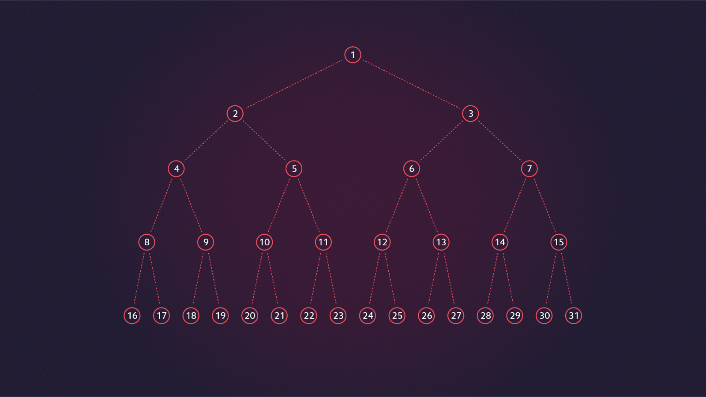

O mundo das Rotas
Rotas? de rotas sempre queremos a melhor rota

Grafos e constelações
Veja a relação entre grafos e as doze constelações

A jornada do químico
Aprenda a teoria dos grafos que existe no mundo da Química

Grafos do tipo arvore
Os grafos de árvore são usados até em mapas de jogo! Aprenda mais aqui
Redes Sociais
As redes sociais se utilizam de grafos o tempo todo, como você acha que ela marcou o seu amigo naquela foto?

História
Você sabe de onde surgiu a teoria dos grafos? Descubra aqui!!